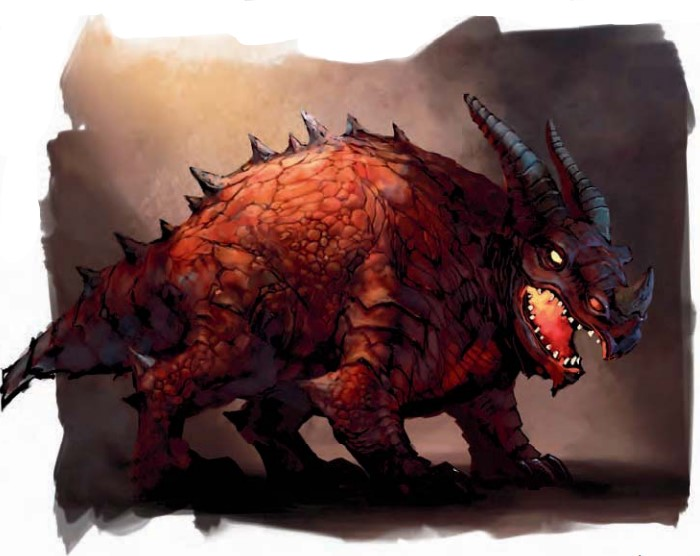

大型魔法兽(龙血，火)
这头火红鳞片的类龙生物以惊人的速度向你冲来。同时��还张开��那令人生畏的下颌咆哮着，你能看见火焰在里面闪耀。

|
生命骰: |
8d10+40（84HP） |
|
先攻: |
-1 |
|
速度: |
40尺(8格)，游泳30尺 |
|
防御等级: |
18(�C1体型，�C1敏捷，+10天生)，接触
8，措手不及 18 |
|
基本攻击/擒抱: |
+8/+16 |
|
攻击: |
近战
啮咬+12(2d6+6加1d6点火焰) |
|
全力攻击: |
近战
啮咬+12(2d6+6加1d6点火焰) |
|
面宽/触及: |
10尺/5尺 |
|
特殊攻击: |
喷吐火焰 |
|
特殊能力: |
黑暗视觉60尺，昏暗视觉，易受寒冷伤害；免疫：火焰，麻痹，睡眠；提亚玛特的祝福(火焰) |
|
豁免: |
强韧
+11，反射 +5，意志+2 |
|
属性: |
力量
19，敏捷 8，体质 21，智力 1，感知 11，魅力 6 |
|
技能: |
跳跃
+8，聆听 +5，侦查+6，游泳 +12 |
|
专长: |
猛力攻击，武器专精(啮咬)，武器专精(远程接触) |
|
地域: |
见下文 |
|
组织: |
见下文 |
|
挑战等级: |
6 |
|
宝物: |
|
|
阵营: |
总是混乱邪恶 |
|
进化: |
9�C16
HD (大型)；17�C24 HD (超大型) |
|
等级调整: |
- |
凶猛但却蠢笨，红龙末裔织火者作为其它更睿智的邪龙末裔的坐骑服务于提亚玛特。当留下��们自行发展时，��们会过的就像鳄鱼一样，但是在熔岩池周围闲混而不是在水里。
战略和战术
战斗:
红龙末裔织火者会立刻攻击冲锋范围内除了提亚马特的邪龙末裔和恶龙意外的任何生物。红龙末裔织火者会以��最好的方式进行攻击：喷射火焰。，然后��会冲向最近的敌人并凶猛的进行撕咬，并会同时寻找其他所有的机会进行喷火。��们虽然能够使用这项特殊能力对付远达60�胀獾牡腥说�却只用来燃烧触及范围内的敌人，特别是当��们聚在一起时。
当作为坐骑使用时，织火者会遵循��们骑手的命令。尽管��们拥有强大的游泳能力，但��们却喜欢熔岩并避免进到水里，除非是命令这么做。
喷射火焰(Su)：红龙末裔织火者以一个标准动作能喷出长达60�盏幕鹧妗Ｕ馐且桓鲈冻探哟スセ�(攻击加值
+7) 而没有射程。受到这种攻击的对手会受到6d6点火焰伤害。目标附近的生物会受到3d6点火焰伤害；一个DC
19的反射豁免则可使这一伤害减半。豁免DC基于体质。
提亚玛特的祝福(火焰) (Su)：红龙末裔织火者5�辗段�内的所有提亚玛特的邪龙末裔都会获得火焰免疫。
技能：红龙末裔织火者在任何游泳鉴定上都有+8的种族加值，哪怕是在执行一些特殊动作或躲避危险。��可以在游泳鉴定中总是取10，即使是分心或面临危险。��能在游泳时��可以选择奔跑动作，但��的游泳只能沿直线。
标准遭遇
织火者可能会单独遭遇，但大多数时候��们会组成三到十二头规模的狩猎群。��们也会作为其它提亚马特的邪龙末裔邪龙末裔的坐骑或守卫野兽。
狩猎团(EL
12):一队十二名黑龙末裔袭击者（见130页）已经征服了一个聚落的红龙末裔织火者来服侍他们。这些袭击者正在寻找一个致力于效仿银龙的龙之萨满教派
(详述见《玩家手册II》)，但他们也会轻易的攻击其它生物。
这些邪龙末裔分成四个更小的群体，各包括三名袭击者和一头织火者：一名黑龙末裔骑在织火者身上而另两名则保持在5�漳谝员隳茉谌魏问焙蚨蓟竦没鹧婷庖摺Ｕ庑┬傲�末裔会四面出击，骑手会将他们坐骑的喷射火焰排在最先的顺序。小组最后收尾。近战中，黑龙末裔袭击者会步行对付侧翼的敌人并保持在织火者附近以免被飞溅的火焰伤害。
生态
红龙末裔织火者喜欢极度炎热的地方，尤其是火山地区。��们每天的大部分时间都用在在晒太阳上或是缓慢滑行于熔岩之中。这种慵懒的生活掩盖了这种生物那掠夺性的本质和令人惊讶的速度。
在饥饿时，��们会突然冲进乡下，放火焚烧任何敢于横在��们路上的比兔子更大的生物。有时��们会乘坐火山爆发的熔岩流，利用这些巨变为借口狩猎或增加毁灭。虽然织火者的攻击时毁灭性的，但附近的环境能够适应，因为那可能是周期性爆发的火山。
红龙末裔织火者一次能吃掉大约相当于其体重的肉，然后返回��们的巢穴。��们的新陈代谢就像龙一样，这样一顿大餐能让��存活长达两年。红龙末裔织火者继承了红龙那残暴的嗜好，不过，杀死的会远超��们所需要食用的。
此外，更聪明的提亚马特的邪龙末裔会捕捉并训练红龙末裔秘法者座位坐骑。虽然很难驯服，但织火者也会乐于接受其它邪龙末裔的命令――虽然经常会在吃点东西之后。这些坐骑是不能允许��们吃饱的；饥饿能让��们保持凶猛并防止昏睡。红龙末裔秘法者（见152页）最常的使用红龙末裔织火者，但已知黑龙末裔袭击者甚至是绿龙末裔潜行者都会骑着��们加入战斗。没有报告白龙末裔骑过织火者，但这更可能是由于��们相互矛盾的居住环境而不是与生俱来的敌意。
成年的雌性织火者每三年一次进入活跃期，在接近盛夏的时候。几头雄性为了争夺与一头雌性的交配权的冲突血腥但却很少致命。一旦雌性怀孕，她会赶走获胜的雄性。而后她会在巢里产下六至八枚卵，每个都大约有1�粘ぃ�重约25磅。她会用小石块和碎屑盖住��们以便让��们避免包括其它织火者在内的所有入侵者。
几周之后，红龙末裔织火者宝宝会摆脱��们的蛋壳，饥饿的开始大嚼。��们会吃任何��们所能看见和压倒的东西，包括��们的兄弟姐妹。
通常每窝只能有一头幼崽幸存。��们的母亲会在之后和幸存的幼崽前去捕猎。年轻的织火者会狂吃属于自己的那份鲜肉并会以惊人的速度生长。��们会在十天之后达到成年体型，尽管��们要到两年之后才能繁育。
环境:红龙末裔织火者最常见的栖息于温暖的丘陵和山脉，但��们也能在任何火山活动的地区被发现。
典型物理特征:红龙末裔织火者从鼻头到尾巴末端的距离大约是12�铡���们那坚固的肉体重约3000磅。
阵营:红龙末裔织火者愚笨而充满毁灭性，体现了红龙最糟糕的特征。��们总是混乱邪恶。
标准宝藏
红龙末裔织火者不会囤积任何宝藏，而��们那炽热的消化系统可能会破坏任何��们所占用的小件物品的价值。
对于玩家角色
红龙末裔织火者如果作为坐骑则十分有趣。��们是脾气异常暴躁的动物，而且很难培训。只有一名非常娴熟的驯兽师才能在婴儿期驯化成功。但对于所有的提亚马特的邪龙末裔来说，对红龙末裔织火者的驯养动物DC上加10而且在骑乘DC上加5.
由于牵涉到了时间和精力，驯化织火者坐骑需要花费3500金币。
载重能力:红龙末裔织火者负载350磅以下时为轻载；351-700磅时为中载；701-1050磅时为重载。
红龙末裔织火者在艾伯伦
红龙末裔织火者居住在希恩德瑞克的蒙塔伦沙漠和Skyraker Claws
山脉。学者推测��们可能曾经是火巨人不久前用来看守兽群的警卫野兽，是巨人们在那时培养创造的。
红龙末裔织火者在费伦
红龙末裔织火者居住在费伦的许多山脉地区，往往会隐藏在白雪复盖的山峰之下的火山洞穴里。许多红龙末裔织火者的大型聚居地存在于峭崖岗附近的无冬森林和恩瑟的燃烟山脉里。这些生物也能在一些文明地区附近被发现。比如，瑟西塔，一头青年红龙，居住在深谷的血腥之角顶端并鼓励红龙末裔织火者住在她的巢穴附近。
红龙末裔织火者的知识
拥有知识（奥术）等级的角色会获得更多关于红龙末裔织火者的知识。当角色成功进行一次技能鉴定，将有如下传闻被揭示，包括那些较低DC等级的知识。认识到这些生物的祖先的话也可以使用知识（宗教）来获取更多的知识。
知识(奥术)
|
DC |
结果 |
|
16 |
这些生物是红龙末裔织火者，一种与红龙有关的食肉性的魔法兽。此结果显示所有魔法兽的特征。 |
|
21 |
红龙末裔织火者易受寒冷伤害并免疫火焰、麻痹和睡眠。��们居住在火山地区但是会周期性的离开进行狩猎。 |
|
26 |
红龙末裔织火者能吐出一团火焰并带来毁灭，以及灼热的啮咬。��们拥有红龙混乱邪恶的本质并会杀死远超��们需要吃的食物。 |
知识(宗教)
|
DC |
结果 |
|
16 |
绿龙末裔剃刀恶魔是提亚玛特的某些后裔。 |
|
21 |
红龙末裔织火者会被其他提亚马特的邪龙末裔用来作为坐骑和守卫野兽。 |